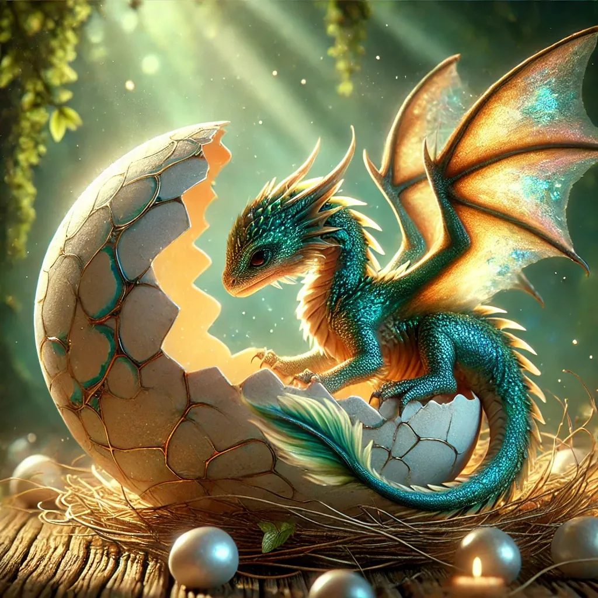

Archive (unlisted)
Junior Mysteries
A Midsummer Junior Mystery: The Dragon Egg
Suspects
- Sir Reginald - The loyal butler, who claims he was polishing the king's armor in the armory.
- Lady Eleanor - The king's advisor, who says she was in the library reading ancient scrolls.
- Captain Roland - The head of the royal guard, who says he was patrolling the castle grounds.
- Mara - The kitchen maid, who states she was preparing the king's evening meal.
- Barnaby - The court jester, who said he was entertaining guests in the grand hall.
Clues
- Lady Eleanor mentions that the court jester, Barnaby, has always had a fascination with dragon eggs.
- Mara says that it has to be Captain Roland, because he is always being mean to everyone, and in particular the kitchen staff.
- The dragon egg was found missing during a change of guards.
- Previous minor thefts have occurred during the changes.
- Captain Roland says that one of the reasons he was on patrol is that he suspects that someone has been using the changing of the guards to steal from the palace, and he suspects Lady Eleanor or Sir Reginald, because they have the opportunity and access to pull something like this off.
- Only individuals with access to the royal nursery could steal the egg, and only senior members of the king's retinue have keys.
- Recently, the king reduced the pay for all of his senior advisors and staff of all types, due to budget difficulties.
- Sir Reginald points out that nobody saw Captain Roland patrolling the grounds.
A Midsummer Junior Mystery
In the ancient kingdom of Draconia, a dragon egg was stolen from the dragon nursery. The king has summoned you to solve this crime. You have 30 minutes before the thief escapes the kingdom forever.
Who stole the egg?

Another Junior Mystery: The Chocolate World
Characters
- Dr. Hugo Larkin - The renowned chocolatier, who claims he was at his factory in Switzerland, preparing for a new product launch.
- Professor Elena Marques - The astrophysicist, who says she was in her observatory studying an unusual cosmic phenomenon.
- Dr. Li Wei - The chemist, who insists he was in his laboratory working on a top-secret project.
- Ms. Rachel Green - The environmentalist, who states she was in the Amazon rainforest conducting research on deforestation.
- Mr. Simon Carter - The technology tycoon, who was supposedly at his company headquarters unveiling a new line of eco-friendly gadgets.
Clues
- The transformation happened simultaneously all over the world, indicating a large-scale operation.
- Previous instances of localized chocolate phenomena (small ponds, trees) were reported near Dr. Hugo Larkin’s factory, suggesting a possible link.
- Professor Elena Marques and Mr. Simon Carter have access to advanced technology that could theoretically cause such a transformation.
- Ms. Rachel Green, while influential, claims she does not have the technological means to do something so grand.
- Mr. Simon Carter’s interest in eco-friendly technology aligns with a motive to draw attention to environmental issues through a grand, albeit unconventional, demonstration
- Analysis of the chocolate shows it contains a unique compound found only in Dr. Hugo Larkin’s factory.
- Satellite data reveals a spike in energy emanating from an observatory at the time of the transformation.
- Hacked communications between Dr. Li Wei and Professor Elena Marques discuss a powerful new device capable of molecular transformation.
Another Junior Mystery
One day, the world awoke to a bizarre and delightful phenomenon: the entire Earth had been transformed into a giant ball of chocolate. Scientists and leaders from around the globe were baffled and alarmed. Figure out who did it!